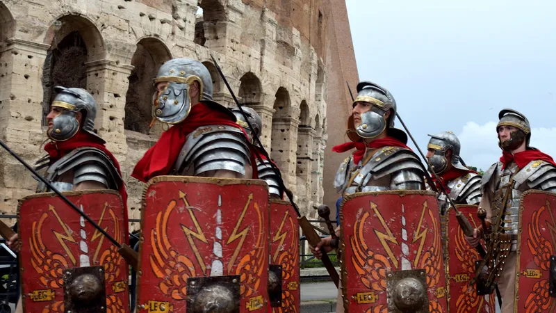

Naazpreet Giani
Rome began as a small village in Italy in 753 BCE and over time it stretched out to the Persian Gulf. Rome was founded by their first king, Romulus, and his twin brother Remus. Rome consisted of three periods: the Regal, the Republican, and the Imperial. During the Regal period (753 BCE - 510 BCE), there was a monarchical system in place and Rome was ruled by a succession of seven kings, the first one being Romulus who ruled from 753 BCE - 716 BCE. During the Republican period (509 BCE - 27 BCE) Rome was ruled by two annually elected representatives who were called praetors later to be called consuls. A late ruler during the republican era was named Julius Caesar, a well-known general and dictator. The imperial period (27 BCE - 476 CE) was characterized by the rise of the Roman Empire. The well-known Emperor’s of the Empire include the first Emperor, Octavian, better known as Augustus, who ruled in an era of peace and Nero, who is said to be Rome’s cruelest Emperor. Rome’s growth was dependent on the focus of its military, Rome’s gradual expansion eventually led to the domination of Rome over the Italian Peninsula and the entire Mediterranean Sea. Later military conquests also helped in the growth of Rome significantly. Rome adopted aspects of the cultures of the lands they conquered including Latium, from which they acquired the Latin language, and Etruscans, from which they acquired their religion, alphabet, as well as gladiator combat. A significant influence of Rome was the Ancient Greeks, their culture was most apparent in art and architecture. Greek architectural styles were implemented in Roman structures such as the Pantheon and the Colosseum. A prominent cultural shift was the rise of Christianity; Constantine I was the first Roman Emperor to convert to Christianity. He was a significant advocate of Christianity influencing it to spread across Europe. After nearly a millennium, the Roman Empire declined due to internal and external conflicts. These include political corruption, economic crises, and class conflict. Furthermore, invasions and military threats. The Roman era was a movement that gained aspects of faith and reason. Rome’s adherence to the belief that the rulers were divine figures created a significant emperor worship which became a major aspect of Rome’s faith. On the other hand, Rome gained a great amount of strength in engineering, government, and philosophical views overtime from different cultures.

(What Rome's military would look like.)